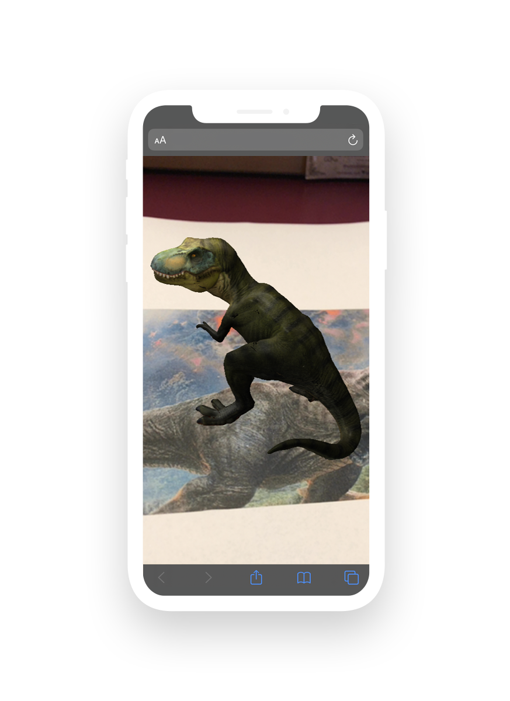

Web-enabled AR experiences
AR.js Studio is an open-source AR creation platform for building custom augmented reality experiences. You can create location-based or marker-based AR applications and deploy them straight to the web. That means you won’t have to download any extra apps to access your experience! Working with AR.js Studio doesn’t require any knowledge of coding, either. You can start creating your first AR project right now.
Pick your project type
Please, select a project type.